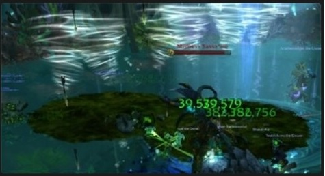
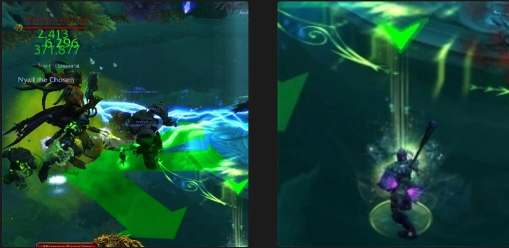
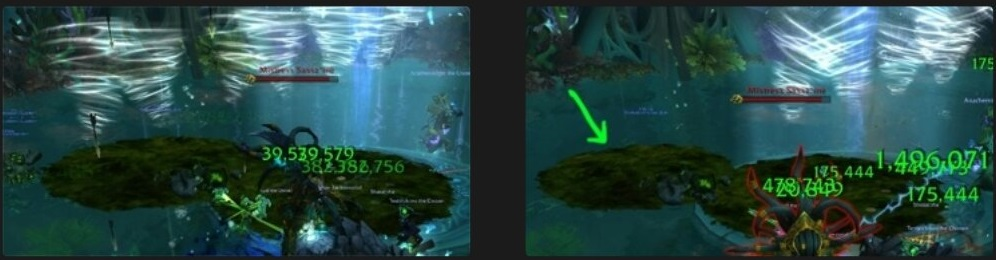
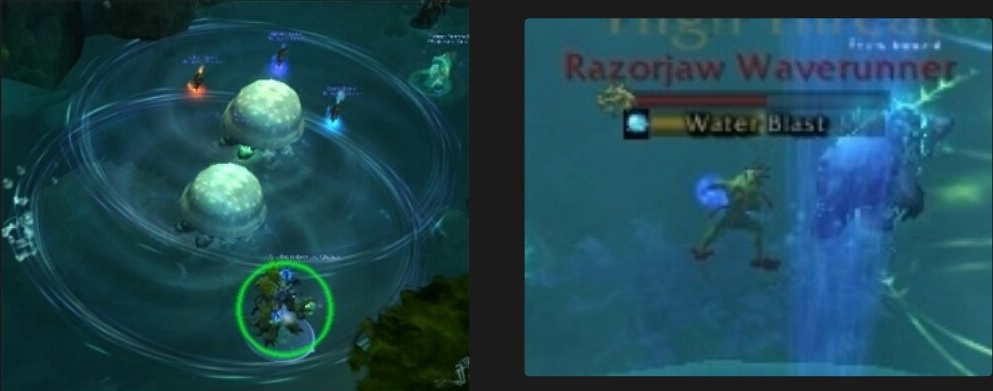
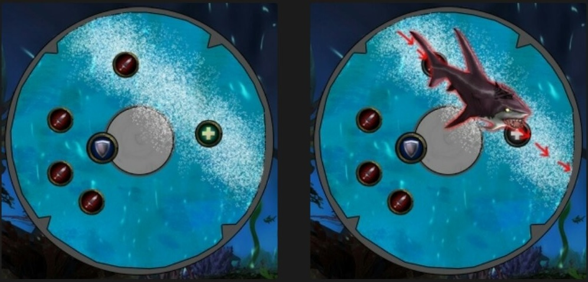
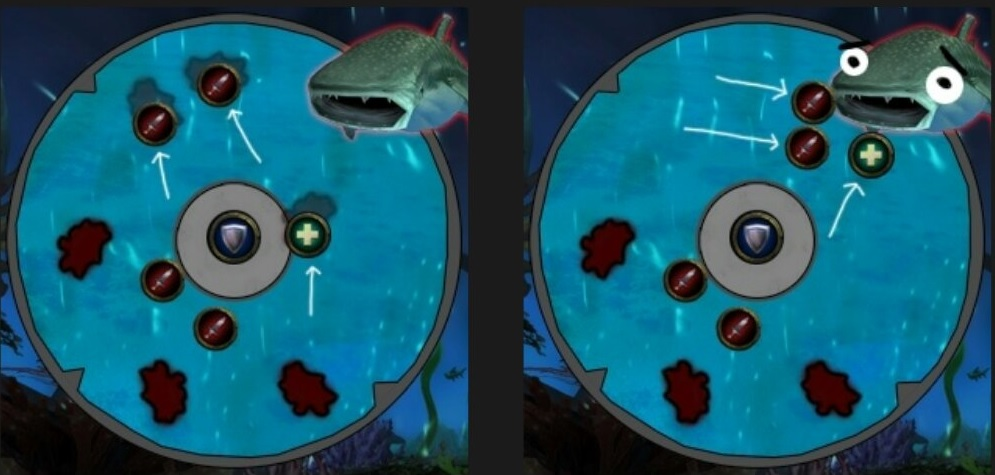
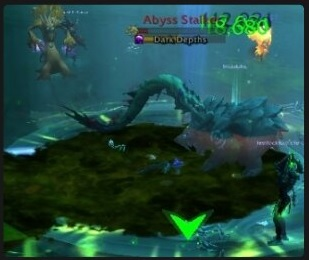

Soeurs de la lune
Cinquième boss du raid, 3 phases, 1 seul boss actif à chaque phase, les 2 autres lancent quand même des techniques.
En P1 (100->70%) : Chasseresse Kasparianne.
En P2 (70->30%) : Capitaine Yathe Heurtelune + Serre-de-lune.
En P3 (30->0%) : Prêtresse Pyroluna.
Méchanique spéciale : Fonts d'Elune.
Le sol de la salle va constamment évoluer, en suivant une évolution lunaire (Nouvelle lune, quart de lune, pleine lune, etc.)
Tant que le joueur reste du côté clair de la lune, il reçoit un débuff qui se stack, Suffusion lunaire, qui augmente les dégâts d'Arcane reçus de 3% par stack.
Tant que le joueur reste du côté obscur de la lune, il reçoit un débuff qui se stack, Suffusion ombreuse, qui augmente les dégâts d'Ombre reçus de 3% par stack.
Si le joueur change de côté de la lune (même s'il ne bouge pas ça peut être le sol qui avance), il va proc une Purge Astrale, ce qui va lui infliger des dégâts, et augmenter les dégâts de la prochaine Purge Astrale de 50% pendant quelques secondes.
Le but n'est donc pas de changer de côté sans cesse, mais seulement quand certaines techniques le demandent.

Lorsque le sol est complètement recouvert par le côté clair ou obscur, les boss vont utiliser une technique puissante en fonction de la phase.
Première technique
(P1, 2, 3) :
Fardeau de douleur. 
Place un débuff sur le main-tank. Ce débuff dure 1 minute et inflige des dégâts d'Ombre.
De plus, tous les dégâts physiques que prend le tank sont répercutés sur tout le raid.
Le tank qui a ce débuff doit donc laisser le boss à l'autre tank et s'occuper des adds (ils n'infligent pas de dégâts physiques)
Deuxième technique (P1, 2, 3) : Du fond des abysses.
Fait apparaître trois Traqueurs des abysses, qui seront tankés par l'off-tank.
Les adds peuvent être stun / slow / grip, etc.
Quand ils meurent ils laissent une AOE qui fait des dégâts et réduit de 75% les chances de toucher, il faut donc en sortir immédiatement.
Ces adds doivent être cleave sur le boss et mourir juste avant que les Tornades Tranchantes arrivent, car l'AOE qu'ils laissent aide à passer à travers les Tornades.

Troisième technique (P1, 2, 3) : Tir de l'hydre.
Marque plusieurs joueurs d'une flèche au-dessus de leur personnage, et indique la direction des tirs avec des flèches devant le boss.
Après 6 secondes, les joueurs marqués subissent de gros dégâts physiques, qui sont divisés entre tous les personnages sur la trajectoire.
Les joueurs touchés par les dégâts reçoivent le débuff "Acide d'hydre" pendant 6 secondes. S'ils reçoivent un autre tir avec ce débuff, ils seront stun 6 secondes.
Le tank qui a le débuff Fardeau de douleur doit faire attention à ne pas être touché par les tirs.
Les joueurs marqués doivent s'écarter les uns des autres pour qu'un autre joueur vienne se placer devant chacun d'eux pour lisser les dégâts. Attention à ce qu'il n'y ait pas trop de monde à la fois qui absorbe pour que tout le raid ne se retrouve pas avec le débuff !

Quatrième technique (P1, P3) : Tornades Tranchantes.
Sass'zine invoque une rangée de tornades qui vont traverser la salle. Les personnages touchés par les tornades subissent un DOT très violent.
Les tornades sont fortement ralenties par les AOE laissées à la mort des Traqueurs des abysses, ceux-ci doivent donc mourir juste avant que les tornades arrivent.
Le fonctionnement est donc similaire aux Anneaux de la Grand Magistrice Elisande.

Cinquième technique (P1, P3) : Faim dévorante.
Place un débuff sur un ou plusieurs joueurs aléatoires. Ce débuff inflige des dégâts et est permanent !
Le seul moyen de l'enlever est de se tenir sous les méduses qui vont apparaître tout au long de la P1 et qui après quelques secondes vont exploser en AOE.
Cette AOE enlève le débuff mais stun pendant 4 secondes ! Les joueurs stun peuvent être dispell par les heal / dispell de masse.
Chaque débuff qui est enlevé des personnages va faire spawn un murloc qui va caster en continu. Les murlocs doivent être contrôlés et sont la priorité des DPS !
Les méduses n'apparaissent qu'en P1, le raid doit donc veiller à ce qu'aucun débuff ne soit présent lorsque le boss passe sous les 70% de PV.
En P3 Sass'zine place à nouveau des débuffs mais il n'y a plus de méduses, cette technique agit donc comme un soft-enrage.

A 70% HP, Sass'zine passe en P2.
Il n'y a plus de Tornades ni de méduses, et aucun nouveau débuff Faim dévorante n'est placé, mais ceux qui n'ont pas été enlevés restent.
Les tanks doivent toujours gérer le Fardeau de douleur et les adds du Fond des abysses ; et les autres joueurs doivent toujours gérer le Tir de l'hydre.
3 nouvelles techniques se rajoutent.
Sixième technique (P2, P3) : Appel de Vellius.
Fait apparaître une zone d'eau agitée qui traverse toute la salle (dans le même genre que lors de la P2 de Tichondrius).
Après quelques instants, un add traverse la salle en suivant cette ligne et repousse les joueurs qu'il croise en leur infligeant des dégâts.

Septième technique (P2, P3) : Invocation d'Ossunet.
Fait régulièrement apparaître des AOE d'Encre répugnante au sol. Marcher dessus donne un débuff de 10 sec qui inflige des dégâts et réduit la vitesse de déplacement de 25%.
Huitième technique (P2, P3) : Signe à Sarukel.
Fait apparaître une grosse baleine sur un côté de la pièce, qui attire les joueurs (comme l'effet de souffle sur Gul'Dan ou Dresaron au Fourré Sombrecoeur) et inflige des dégâts à tout le raid toutes les 2 secondes. Si un joueur se trouve à moins de 15 mètres de la baleine, il est dévoré et tué.
Pour la faire disparaître, il faut la nourrir de 3 Encre répugnante.
3 joueurs doivent donc passer dans une AOE pour obtenir le débuff et s'approcher de la baleine pour qu'elle l'absorbe.
Cette technique doit être gérée le plus rapidement possible, car le mouvement gêne fortement l'exécution des autres techniques.

Mode Héroïque
(P1, 2, 3) :
Sombres profondeurs.

En mode de difficulté héroïque, les adds de Fond des abysses vont lancer des casts de Sombres Profondeurs, ce qui a pour effet de les téléporter sur un membre du raid au hasard et de lui infliger des dégâts.
Pour garder le contrôle des adds il faut donc couper ces casts au maximum, et lorsqu'ils sont bas en vie utiliser des sorts de contrôle pour que l'AOE qu'ils laissent soit positionné stratégiquement.

{kind=link}